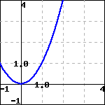

Appendix A Hints, Answers, and Solutions
1 Instructive Examples
1.1 Arithmetic
Checkpoint 1.1.2. Declaring a Problem Seed.
Checkpoint 1.1.3. Controlling Randomness.
Checkpoint 1.1.4. Special Answer Checking.
Checkpoint 1.1.5. Using Hints.
Checkpoint 1.1.6. No Randomization.
Checkpoint 1.1.7. Local PG.
Checkpoint 1.1.8. Local PG File.
1.2 The Quadratic Formula
Checkpoint 1.2.2. Solving Quadratic Equations.
1.2.2.a Identify Coefficients.
1.2.2.b Use the Quadratic Formula.
Solution.
Recall that the quadratic formula is given in Theorem 1.2.1.
You already identified \(a = {2}\text{,}\) \(b = {-5}\text{,}\) and \(c = {-12}\text{,}\) so the results are:
\begin{equation*}
x = {\frac{-\left(-5\right)+\sqrt{\left(-5\right)^{2}-4\cdot 2\cdot \left(-12\right)}}{2\cdot 2}} = {4}
\end{equation*}
or
\begin{equation*}
x = {\frac{-\left(-5\right)-\sqrt{\left(-5\right)^{2}-4\cdot 2\cdot \left(-12\right)}}{2\cdot 2}} = {-{\frac{3}{2}}}
\end{equation*}
Checkpoint 1.2.3. Nested tasks.
1.2.3.a Identify Coefficients.
1.2.3.a.i
1.2.3.a.ii
1.2.3.a.iii
1.2.3.b Use the Quadratic Formula.
Solution.
Recall that the quadratic formula is given in Theorem 1.2.1.
You already identified \(a = {3}\text{,}\) \(b = {-16}\text{,}\) and \(c = {-12}\text{,}\) so the results are:
\begin{equation*}
x = {\frac{-\left(-16\right)+\sqrt{\left(-16\right)^{2}-4\cdot 3\cdot \left(-12\right)}}{2\cdot 3}} = {6}
\end{equation*}
or
\begin{equation*}
x = {\frac{-\left(-16\right)-\sqrt{\left(-16\right)^{2}-4\cdot 3\cdot \left(-12\right)}}{2\cdot 3}} = {-{\frac{2}{3}}}
\end{equation*}
Checkpoint 1.2.4. Copy a Problem with Tasks.
1.2.4.a Identify Coefficients.
1.2.4.b Use the Quadratic Formula.
Solution.
Recall that the quadratic formula is given in Theorem 1.2.1.
You already identified \(a = {2}\text{,}\) \(b = {-5}\text{,}\) and \(c = {-25}\text{,}\) so the results are:
\begin{equation*}
x = {\frac{-\left(-5\right)+\sqrt{\left(-5\right)^{2}-4\cdot 2\cdot \left(-25\right)}}{2\cdot 2}} = {5}
\end{equation*}
or
\begin{equation*}
x = {\frac{-\left(-5\right)-\sqrt{\left(-5\right)^{2}-4\cdot 2\cdot \left(-25\right)}}{2\cdot 2}} = {-{\frac{5}{2}}}
\end{equation*}
1.3 Open Problem Library
Checkpoint 1.3.1. Cylinder Volume.
Solution.
A cylinder’s volume formula is \(V= (\text{base area}) \cdot \text{height}\text{.}\) A cylinder’s base is a circle, with its area formula \(A = \pi r^{2}\text{.}\)
Putting together these two formulas, we have a cylinder’s volume formula:
\(\displaystyle{ V= \pi r^{2} h }\)
Throughout these computations, all quantities have units attached, and we only show them in the final step.
-
Using the volume formula, we have:\(\displaystyle{\begin{aligned} V \amp = \pi r^{2} h \\ \amp = \pi \cdot 6^{2} \cdot 10 \\ \amp = \pi \cdot 360 \\ \amp = 360 \pi \textrm{ m}^3 \end{aligned}}\)Don’t forget the volume unit \(\textrm{m}^3\text{.}\)
-
To find the decimal version, we replace \(\pi\) with its decimal value, and we have:\(\displaystyle{\begin{aligned}[t] V\amp = 360 \pi \\ \amp \approx 360 \cdot 3.14\ldots \\ \amp \approx {1130.97\ {\rm m^{3}}} \end{aligned}}\)Don’t forget the volume unit \(\textrm{m}^3\text{.}\)
1.4 Antidifferentiation
1.4.2 WeBWorK Exercises
1.4.2.1. Antiderivatives.
1.4.2.6. Show Your Work.
1.6 Multiple Choice
Checkpoint 1.6.1. Drop-down/Popup.
Solution.
If \(\sqrt{2}\) were rational, then \(\sqrt{2}=\frac{p}{q}\text{,}\) with \(p\) and \(q\) coprime. But then \(2q^2=p^2\text{.}\) By the Fundamental Theorem of Arithmetic, the power of \(2\) dividing the left side is odd, while the power of \(2\) dividing the right side is even. This is a contradiction, so \(\sqrt{2}\) is not rational.
Checkpoint 1.6.2. Choose one.
Checkpoint 1.6.3. Choose a Subset of Options.
Checkpoint 1.6.4. Choose a Subset of Options with Automated Labeling.
Checkpoint 1.6.5. Choose a Subset of Options with Explicit Labeling.
1.7 Tables
Checkpoint 1.7.1. Complete this Table.
1.8 Graphics in Exercises
Checkpoint 1.8.1. A static <latex-image> graph.
Checkpoint 1.8.2. A randomized <latex-image> graph.
Checkpoint 1.8.3. A <latex-image> graph affected by <latex-image-preamble>.
Checkpoint 1.8.5. Solve using a graph.
![a plot of a curve on a cartesian set of axes; the x axis ranges from -1 to 4, and the y-axis ranges from -1 to 4; the curve enters from the left, below the x-axis, and curves upward and to the right until it reaches the point (0,0); from here it continues predominantly rightward for a bit, bending slightly upward more and more as it progresses; it passes through the points (2,1) and (2.51984,2) before leaving the graph moving more and more upward and to the right; a horizontal line segment moves rightward from y=1 on the y-axis until it reaches a point on the curve; a vertical line segment moves down from this point to x=2 on the x-axis.](generated/webwork/images/solving-with-graph-image-2.png)
Exercises
2 Technical Examples
2.1 PGML Formatting and Verbatim Calisthenics
Checkpoint 2.1.2.
2.2 Subject Area Templates
Checkpoint 2.2.1. Answer is a number or a function.
Checkpoint 2.2.2. Answer is a function with domain issues.
Checkpoint 2.2.3. Multiple Choice by Popup, Radio Buttons, or Checkboxes.
Checkpoint 2.2.4.
Checkpoint 2.2.5. Tables.
2.3 Stress Tests
Checkpoint 2.3.1. PTX problem source with server-generated images.
2.3.1.a
Solution.
